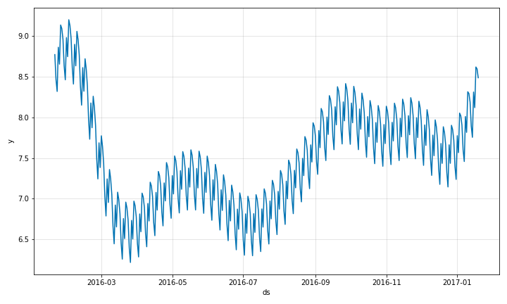
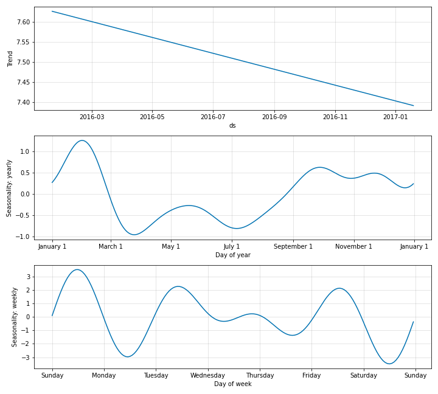
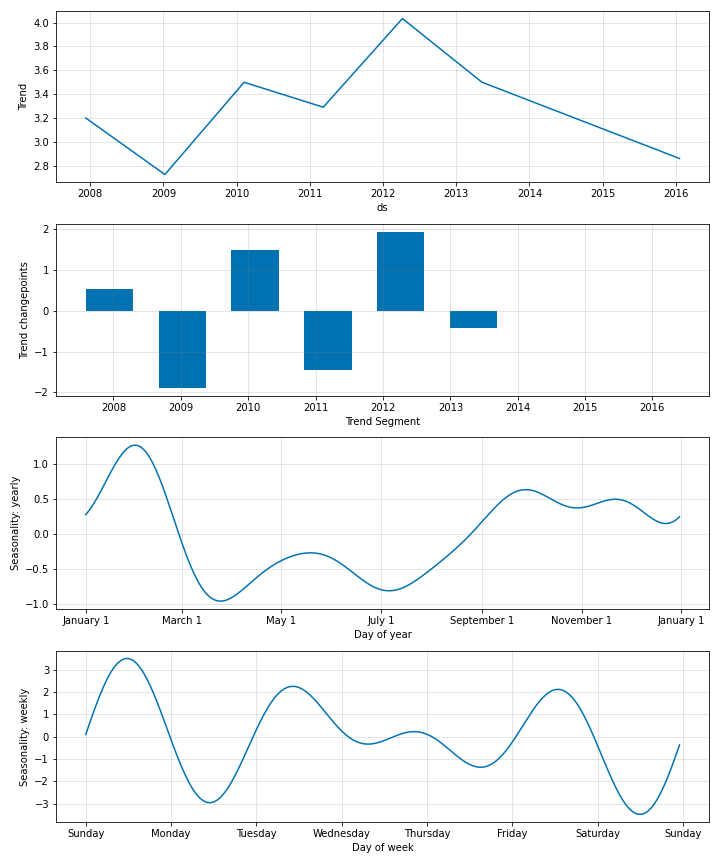

Quick Start Guide¶
This page contains details of how you can build a simple model using NeuralProphet with minimal features.
Install¶
After downloading the code repository (via git clone), change to the repository directory (cd neural_prophet) and install neuralprophet as python package with
pip install .
Note: If you plan to use the package in a Jupyter notebook, it is recommended to install the ‘live’ package version with pip install .[live].
This will allow you to enable plot_live_loss in the train function to get a live plot of train (and validation) loss.
Import¶
Now you can use NeuralProphet in your code:
from neuralprophet import NeuralProphet
Input Data¶
The input data format expected by the neural_prophet package is the same as in original
prophet. It should have two columns, ds which has the timestamps and y column which
contains the observed values of the time series. Throughout this documentation, we
will be using the time series data of the log daily page views for the Peyton Manning
Wikipedia page. The data can be imported as follows.
import pandas as pd
df = pd.read_csv('../example_data/example_wp_log_peyton_manning.csv')
The format of the data looks like below.
ds |
y |
|---|---|
2007-12-10 |
9.59 |
2007-12-11 |
8.52 |
2007-12-12 |
8.18 |
2007-12-13 |
8.07 |
2007-12-14 |
7.89 |
## Simple Model
A simple model with neural_prophet for this dataset can be fitted by creating
an object of the NeuralProphet class as follows and calling the fit function. This
fits a model with the default settings in the model. For more details on these default settings, refer to
the Section on Hyperparameter Selection.
m = NeuralProphet()
metrics = m.fit(df, freq="D")
Once the model is fitted, we can make forecasts using the fitted model. For this, we first
need to create a future dataframe consisting of the time steps into the future that we need
to forecast for. NeuralProphet provides the helper function make_future_dataframe for
this purpose. Note that the the frequency of data is set globally here.
Valid timeseries frequency settings are pandas timeseries offset aliases.
future = m.make_future_dataframe(df, periods=365)
forecast = m.predict(future)
Plotting¶
With the forecasts obtained from the model, you can visualize them.
forecasts_plot = m.plot(forecast)
{: style=”height:350px”}
This is a simple model with a trend, a weekly seasonality and a yearly seasonality estimated by default. You can also look at the individual components separately as below.
fig_comp = m.plot_components(forecast)
{: style=”height:500px”}
The individual coefficient values can also be plotted as below to gain further insights.
fig_param = m.plot_parameters()
{: style=”height:600px”}
Validation¶
Model validation for NeuralProphet can be done in two ways. Users can split the dataset manually to
validate after the model fitting like below by specifying the fraction of data to be used for validation
in the argument valida_p. This validation set is reserved from the end of the series.
m = NeuralProphet()
df_train, df_val = m.split_df(df, valid_p=0.2)
You can now look at the training and validation metrics separately as below.
train_metrics = m.fit(df_train)
val_metrics = m.test(df_val)
You can also perform validation per every epoch during model fitting. This is done as follows by setting the
validate_each_epoch argument in the fit function call. This lets you look at the validation metrics while model training.
# or evaluate while training
m = NeuralProphet()
metrics = m.fit(df, validate_each_epoch=True, valid_p=0.2)
Reproducibility¶
The variability of results comes from SGD finding different optima on different runs. The majority of the randomness comes from the random initialization of weights, different learning rates and different shuffling of the dataloader. We can control the random number generator by setting it’s seed:
from neuralprophet import set_random_seed
set_random_seed(0)
This should lead to identical results every time you run the model. Note that you have to explicitly set the random seed to the same random number each time before fitting the model.